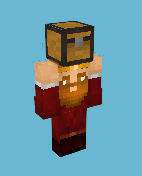
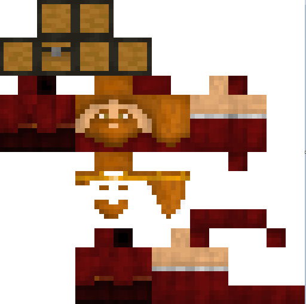
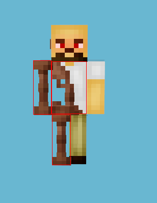
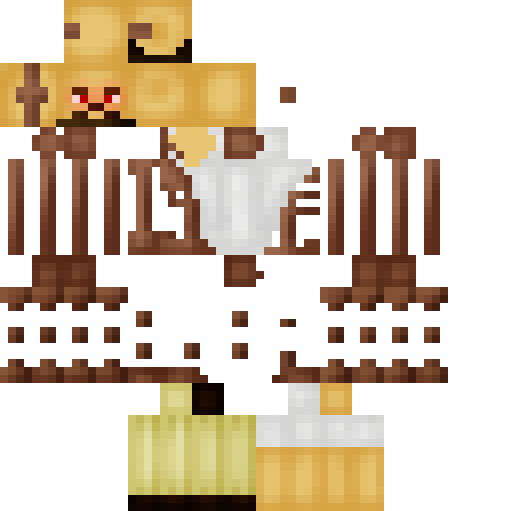
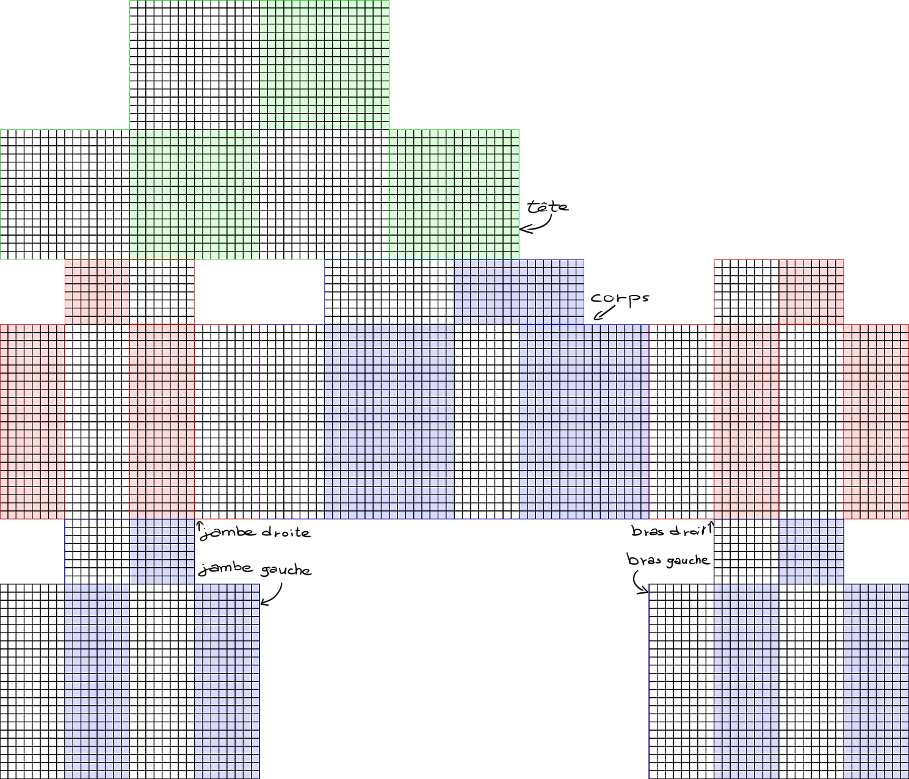
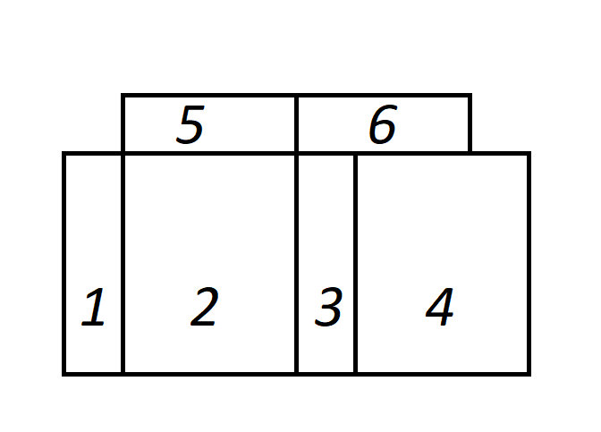
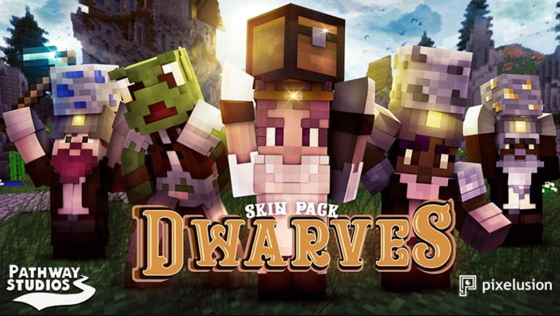

Le skin doit être dessiné à plat evidemment, puis le logiciel le remet en 3D tout seul.
voici quelques exemples de skins dessinés:
Et ici les même persos remis en 3D.
Tu vois donc que tous les persos sont dessinés en "pixel art" c'est-à-dire que c'est dessiné que avec des gros carrés, le nombre de carrés pour chaque face est imposé, il faut donc bien respecter les dimensions et le peu de détails imposés.
Tu peux "feinter" le format imposé en dessinant pas forcément des bras sur les bras, la tête sur le cube de la tête etc...
Par exemple, pour dessiner un nain, j'ai dessiné les bras à l'envers, la tête au milieu du torse, et j'ai fait semblant qu'il portait un cube pour dessiner à la place de la "vrai" tête, ça donne ça:
 Tu peux ne pas dessiner sur toute la surface (mais y'a quand même un minimum), par exemple pour faire un cybord, j'ai utilisé que la moitié des membres pour les faire plus fins.
(J'ai rajouté des carrés rouges sur l'image pour que tu vois que je respecte quand même le format)
 voilà donc le patron pour faire tes dessins. Si tu veux télécharger l'image clique dessus.
Tous les cubes respectent cette logique:
1/ Côté droit
2/ Face
3/ Côté gauche
4/ Arrière
5/ Dessus
6/ Dessous
Evidemment tu n'es pas obligé de faire les pixels parfaitement, de toute façon dans l'idée, je retravaillerai les images sur mon ordi par la suite.
Chaque cube qui compose le perso a deux couches, c'est-à-dire que tu peux mettre du relief. Ce que je propose c'est que tu t'en occupes pas, et c'est moi qui adapterai si nécessaire.
Si tu souhaites vraiment dessiner sur deux couches, tu peux faire deux dessins par perso, un pour la première couche (qui rappelons le a besoin d'être a peu près remplie), et un pour la deuxième couche (qui elle ne comporte que ce que tu veux, ça peut être un simple détail de quelques pixels).
Pour avoir une idée de ce qu'est la deuxieme couche, regarde le cyborg, j'ai mis les axes des genoux/coudes en relief, et sur le nain, c'est la barbe et les cheveux.
Comme Minecraft est beaucoup joué par les enfants, il va sans dire qu'il ne faut rien dessiner de "choquant" Microsoft interdit donc le sang, toute représentation sexuelle, et les signes religieux.
Et évidemment pour des questions de droits, on peut pas dessiner de personnages connus, (super héro, personnalité existante etc).
Pour finir, le plus marrant, la miniature, c'est l'image qui représentera toutes les persos, quand les gens cherchent des skins, ils voient une liste des miniatures, faut donc qu'elle soit très attrayante.
Là y'a pas de contraintes autre que le format (1920x1080, c'est le rectangle en dessous pour avoir une idée), excepté le sang, sexe etc.. 
Faut juste le nom du "pack" bien mis en avant, et les deux logos (pixelusion et pathway), mais ces derniers, c'est moi qui les ajouterai.
Pour le coup elles sont toutes un peu pareil, c'est donc super intéressant que y'ai vraiment ton style dessus, ça la fera ressortir. Si tu veux voir des les vraies miniatures que y'a sur le magasin en ligne, clique [ici].
Mais le mieux serait quand même de rappeler le côté cubique du jeu et les jeux vidéos en général, mais c'est juste une idée.
Et voilà tu sais tout, le reste c'est moi qui m'en occupe, Si t'as des questions, tu peux me les demander sur instagram ou par téléphone et je ferai tout pour être le plus compréhensible. ;)
Si t'as un ordi dispo et que tu veux voir en 3D comment ça marche plus précisément, je t'invite à aller sur ce site où tu peux dessiner à la souris directement dessus (une fois que t'es dessus, clique sur le pinceau, puis tu choisis tes couleurs et tu peux faire ce que tu veux).
{kind=link}